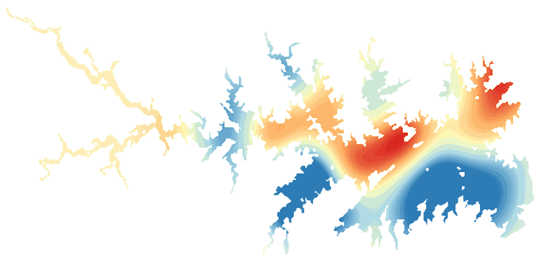

LakeScope › SC
Lake Murray today
Updated 2026-11-14 - Atlas Labs
Clear water, 64°F water, level falling, 2 ft below normal, calm this morning.
Water level
353.62 ft
USGS gauge 02168500 - 2026-11-14
7-day trend: falling (-0.53 ft). Compared with normal for this date: -2.3 ft (same weeks, 2016-2025).
Water clarity and algae
Clear water Last clear view: yesterday.
Surface temperature
64°F
seen from space on 2026-11-11

Weather, next 3 days
| Day | Sky | High / low | Wind | Rain |
|---|---|---|---|---|
| Saturday | Sunny | 55 / 36°F | 9 mph NW | 0% |
| Sunday | Areas Of Frost then Sunny | 55 / 39°F | 3 mph N | 0% |
| Monday | Mostly Sunny | 55 / 39°F | 6 mph NE | 0% |
Sunrise 06:57 - sunset 17:21 - Waxing crescent. National Weather Service.
Get the LakeScope app: alerts and the 3-D view of Lake Murray